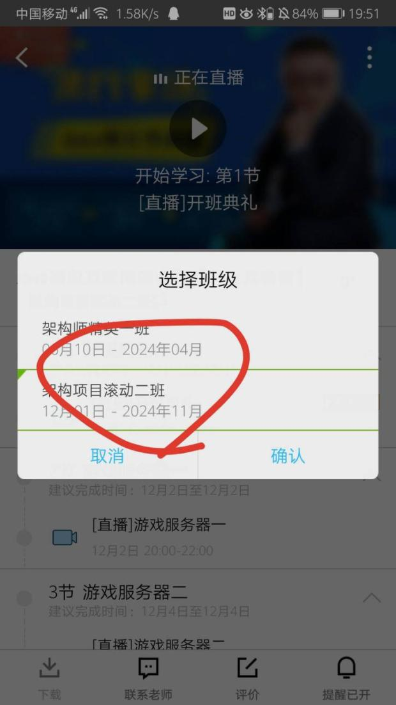

入学流程：
- 班主任小姐姐会帮您进入相应报名课程的QQ群，请关注群内未来【公告】。
- 请认真填写【VIP服务信息表】，并及时【发回班主任】，我们会尽快安排入学【一对一电话服务】。
- 架构师二期项目课程，腾讯会在1天左右开放权限，您登录腾讯课堂网页版，点击全部订单，有个【重学/赠送】查询，点击【接受】就可以啦，请优先看一期的知识点内容。
- 重要！重要！重要！请认真阅读这个页面内容，对您有很大的帮助。
- 如有问题，请先查看页面最下方的AQS是否能解决您的问题。
务必牢记：
1www.mashibing.com/vip.html 请牢记这个页面，信息变更会自动同步在该页面！
2
www.github.com/bjmashibing 是我们唯一的github官方资料提供仓库
上课安排（特殊安排关注群公告）：
xxxxxxxxxx
5
1
Java基础: 每周六日（15:00-17:00，20：00—22：00），每周日（15:00-17:00）
2
架构课程: 一期：每周一三五 上课时间 晚上8：00-10：00
3
架构课程: 二期：每周二四日 上课时间 晚上8：00—10：00
4
大数据课程: 每周二四日 上课时间 晚上8：00-10：00
5
AI课程: 每周六（15:00-17:00 ， 20:00-22:00）
开始前：
新手预习资料 统一访问该页面获取预习资料
公开课录播视频 统一访问该页面获取录播视频 密码：f8lz
公开课录播备用地址 备用地址 密码：dk2w
docker和k8s资料 网盘资料链接 密码：zcmq
VIP学员大课资料：
- A：JAVA后端工程师，统一访问GitHub仓库中的java库
- B：JAVA高级架构师，统一访问GitHub仓库中的InternetArchitect库
- C：大数据开发工程师，统一访问GitHub仓库中的BigDataArchitect库
- D：AI人工智能工程师，统一访问GitHub仓库中的
- E：JVM资料，统一访问GitHub仓库中的JVM库
- F：网约车，统一访问GitHub
【JAVA后端、大数据、AI】无需跳跃，按顺序学习即可
架构一期课程每阶段对应目录章节(持续更新中)：
马老师面试课
138 硬技能之上的软技巧1 地址
143 硬技能之上的软技巧2 地址
148 硬技能之上的软技巧3 地址
马老师说的6+2的大体内容：
xxxxxxxxxx81设计模式2多线程高并发3网络到分布式4mysql调优5jvm6网约车项目7亿级流量项目8*游戏netty项目
抽丝剥茧设计模式
多线程与高并发编程
41 多线程与高并发编程一 地址
46 多线程与高并发编程二 地址
52 多线程与高并发编程三 地址
58 多线程与高并发编程四 地址
62 多线程与高并发编程五 地址
64 多线程与高并发编程六 地址
69 多线程与高并发编程七 地址
74 多线程与高并发编程八 地址
76 多线程与高并发编程九 地址
网络到分布式
24 高并发负载均衡：网络协议原理 地址
25 高并发负载均衡：LVS的DR,TUN,NAT模型推导 地址
26 高并发负载均衡：LVS的DR模型试验搭建 地址
28 高并发负载均衡：基于keepalived的LVS高可用搭建 地址
43 redis 介绍及NIO原理介绍 地址
44 redis的string类型&bitmap 地址
45 redis的list、set、hash、sorted_set、skiplist 地址
48 redis的消息订阅、pipeline、事务、modules、布隆过滤器、缓存LRU 地址
49 redis的持久化RDB、fork、copyonwrite、AOF、RDB&AOF混合使用 地址
50 redis的集群：主从复制、CAP、PAXOS、cluster分片集群01 地址
53 redis的集群：主从复制、CAP、PAXOS、cluster分片集群02 地址
54 redis开发：spring.data.redis、连接、序列化、high/low api 地址
55 zookeeper介绍、安装、shell cli 使用，基本概念验证 地址
56 zookeeper原理知识，paxos、zab、角色功能、API开发基础 地址
57 zookeeper案例：分布式配置注册发现、分布式锁、ractive模式编程 地址
（二期）Spring cloud + 网约车项目
19 Spring Cloud微服务概述，注册中心搭建 地址
20 Eureka 原理和源码 地址
21 Eureka 配置和 服务间调用方式 地址
22 Ribbon负载均衡 地址
23 Feign声明式调用 地址
24 Hystrix熔断降级 地址
25 Hystrix熔断原理源码 地址
26 网关Zuul的使用 地址
（持续更新中.........）
消息中间件
127 消息中间件-ActiveMQ 01 地址
129 消息中间件-ActiveMQ 02 地址
130 消息中间件-ActiveMQ 03 地址
131 消息中间件-ActiveMQ 04 地址
133 消息中间件-ActiveMQ 05 地址
134 消息中间件-ActiveMQ 06 地址
135 消息中间件-ActiveMQ 07 地址
136 消息中间件-ActiveMQ 08 地址
139 消息中间件-RocketMQ 01 地址
140 消息中间件-RocketMQ 02 地址
141 消息中间件-RocketMQ 03 地址
144 消息中间件-RocketMQ 04 地址
145 消息中间件-RocketMQ 05 地址
146 消息中间件-RocketMQ 06 地址
（持续更新中.........）
JVM
80 JVM入门级class文件格式 地址
86 详解Class加载过程 地址
93 Java内存模型 地址
97 内存屏障与JVM指令 地址
102 Java运行时数据区和常用指令 地址
110 JVM调优必备理论知识-GC Collector-三色标记 地址
114 JVM调优实战 地址
119 JVM实战调优 地址
124 JVM实战调优 地址
128 垃圾回收算法串讲 地址
132 JVM常见参数总结 地址
底层：操作系统 组成原理
150 java程序员需要了解的底层知识第一课 地址
MYSQL基础
mysql视频：链接 提取码：iw0k
mysql有道云笔记的连接：文档：MySQL 链接
mysql调优
107 精通mysql调优大师班一 地址
108 精通mysql调优大师班二 地址
111 精通mysql调优大师班三 地址
112 精通mysql调优大师班四 地址
113 精通mysql调优大师班五 地址
115 精通mysql调优大师班六 地址
116 精通mysql调优大师班七 地址
117 精通mysql调优大师班八 地址
Spring源码分析
18 Spring源码-源码概览 地址
23 源码分析-Spring容器初始化过程 地址
27 源码分析-Spring Environment原理 地址
29 源码分析-spring监听器 地址
34 源码分析-Spring IOC 地址
37 源码分析-Spring AOP原理 地址
42 源码分析-Spring Boot Starter原理 地址
47 Spring高级运用 地址
51 Spring工作常用技巧 地址
71 Spring源码总结 地址
NIO & Netty
81 Java NIO 一 地址
84 Java NIO 二 地址
91 NIO之ByteBuffer 地址
96 Netty 之NIO selector 地址
101 Netty之内存管理 地址
109 Netty之内存管理二地址
118 NETTY小结 地址
137 Netty 内存管理 （netty源码） 地址
142 Netty 内存管理 地址
147 Netty 内存管理 地址
149 Netty 启动原理 地址
亿级流量多级缓存高并发系统架构实战
59 亿级流量多级缓存高并发系统架构实战一 地址
60 亿级流量多级缓存高并发系统架构实战二 地址
61 亿级流量多级缓存高并发系统架构实战三 地址
65 亿级流量多级缓存高并发系统架构实战四 地址
68 亿级流量多级缓存高并发系统架构实战五 地址
70 亿级流量多级缓存高并发系统架构实战六 地址
73 亿级流量多级缓存高并发系统架构实战七 地址
75 亿级流量系统架构之限流 地址
78 亿级流量系统架构之扩容 地址
79 亿级流量系统架构之降级 地址
82 亿级流量系统架构之分布式事务原理 地址
83 亿级流量系统架构之实战流量分发层 地址
87 亿级流量系统架构之实战域名与https 地址
88 亿级流量系统架构之网关kong 地址
89 电商系统详情页PLAN A 地址
90 静态文件生成-rsync 地址
94 静态化文件生成业务流程及技术选型解析 地址
95 Arica开发实战CRUD 地址
98 静态文件生成 地址
99 html同步，生成首页，批量生成，健康检查 地址
100 单机事务，并发锁，压力测试 地址
103 html架构的应用场景，扩容，静态分页实现 地址
104 分页逻辑2，动态加静态，lua访问mysql 地址
105 resty_template,静态文件补偿机制实现 地址
106 亿级流量高并发项目总结 地址
区块链
120 区块链-比特币、挖矿、炒币原理(1) 地址
121 区块链-比特币、挖矿、炒币原理(2) 地址
122 区块链-以太坊原理 地址
123 区块链-幽灵协议，pow，pos 地址
125 区块链-DPOS共识协议，solidity智能合约开发 地址
126 区块链-solidity手写加密货币 地址
架构师前置知识
4 spring,ioc入门与详解 地址
5 maven的简单构建，springaop 地址
6 spring中的循环依赖、代理方式讲解 地址
7 springboot mvc项目结构、开发、热部署 地址
8 springboot web项目整合数据源、Thymeleaf 地址
9 项目开发-thymeleaf、jpa、bootstrap 地址
10 mybatis整合SpringBoot、mybatis-generator 地址
11 企业项目开发中的角色、流程、任务分配 地址
12 pageHelper、翻页、Example使用、异步表单 地址
13 开发-RBAC、表设计、YAML、项目配置 地址
14 开发-RBAC前后端、mybatis多表、thymeleaf 地址
15 开发-Odata、Restful、SpringBoot文件上传 地址
16 开发-权限认证、Icheck、Mybatis plus 地址
17 Tengine原理、对比、部署、配置、虚拟主机 地址
19 Tengine 反向代理、负载均衡、 session共享 等 地址
20 Tengine 动静分离 https SSL 非对称加密 地址
21 Nginx OpenSSL 自签名证书 xca FastDFS介绍 地址
22 FastDFS 部署 原理 整合Nginx JavaAPI 地址
30 FastDFS 集群原理 部署 缓存 地址
31 FastDFS keepalived 高可用 zookeeper 地址
32 dubbo demo、角色、 RPC、原理 、RMI 地址
33 项目微服务拆分 注册中心、dubbo admin 地址
35 dubbo下的微信公众号项目 一 地址
36 dubbo下的微信公众号项目 二 地址
38 RestFul风格API、swagger API 地址
39 dubbo核心配置 聚合项目构建 地址
PMP大讲堂之：TDD在敏捷开发中的最佳实践
视频地址 密码：y5fe
架构二期课程每阶段对应目录章节(持续更新中)：
Java游戏开发
2 创建 Netty 服务器 地址
3 Protobuf 消息应用 地址
4 重构，设计模式实战 地址
5 通过 Javassist 提升反射效率 地址
6 重新设计移动消息 地址
7 游戏服务器中的单线程设计 地址
8 多线程读写数据库 地址
9 利用RocketMQ 实现简单的排行榜 地址
10 游戏服务器的部署 地址
springboot
11 架构体系讲解及springboot入门 地址
12 springboot web开发 地址
13 springboot-thymeleaf及数据源配置 地址
14 springboot启动源码解析一 地址
15 springboot启动源码解析二 地址
16 springboot启动源码解析三 地址
17 springboot自动装配源码解析 地址
18 springboot与tomcat整合源码解析 地址
网约车项目
19 网约车项目一 地址
20 网约车项目二 地址
21 网约车项目三 地址
22 网约车项目四 地址
23 网约车项目五 地址
24 网约车项目六 地址
课程包中的小课
- 多线程与高并发，课程链接，资料地址
- 数据结构与算法，课程链接，资料地址
- 抽丝剥茧设计模式，课程链接，资料地址
- 坦克大战一期，课程链接，资料地址
- 坦克大战二期，课程链接，资料地址
- Java web【马士兵教育】，课程链接，资料地址
- Java日志框架-SLF4J入门，课程链接
- 超级小白编程入门，课程链接
- 简明JDBC教程，课程链接
- Java响应式编程【马士兵教育】，课程链接
- 马士兵Java零基础入门【马士兵教育】，课程链接
- 架构师必备技能doker入门到专精，课程链接，资料地址
- 架构师高级技能kubernetes入门到精通，课程链接，资料地址
AQS:
一、腾讯课堂目录为什么没有按阶段划分，看起来比较乱？
答：因为咱们在讲知识点的过程中，有的阶段老师会根据大家的吸收程度，做一些延长，但是腾讯课堂的目录没办法按阶段这么划分增加。所以咱们会是一节一节的来，中间会穿插有补课，老师担心大家看目录会觉得乱，找不到课，就给大家整理了一个vip页面，按阶段划分开来了。你按照VIP界面的课程目录章节地址看课就可以呢。
二、腾讯课堂的目录标题和内容不对应
答：腾讯课堂前期的目录，因为会有一些知识点增加，会再添加一节到大标题下面，但是这个无法再更改啦，您以小标题内容为准哦，后面咱们的课程目录和标题就对应上啦，而且咱们的vip页面和腾讯课堂的目录一周会更改一次，您可以按照VIP页面的目录章节看课哒
三、架构一期和二期的区别？
答：架构一期讲的知识点，二期讲项目。我们本着讲最全的知识，所以一期从5个月扩充到近1年的知识量，同时开设了并行的二期班，主要讲项目。
四、一对一什么时间给我约呢？
答：在您提交【VIP服务信息表】给班主任之后，因为报名学员很多，班主任老师会在三天内为您预约讲师，给您进行电话一对一的学习计划。
五、为什么登录课堂看课只能看到架构一期的课程，看不到架构二期的？
PC客户端：

手机客户端：

